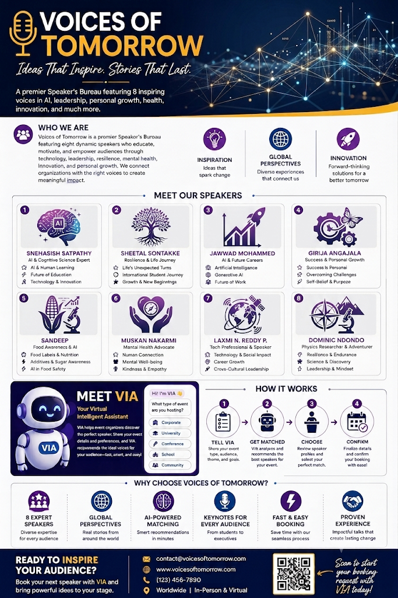
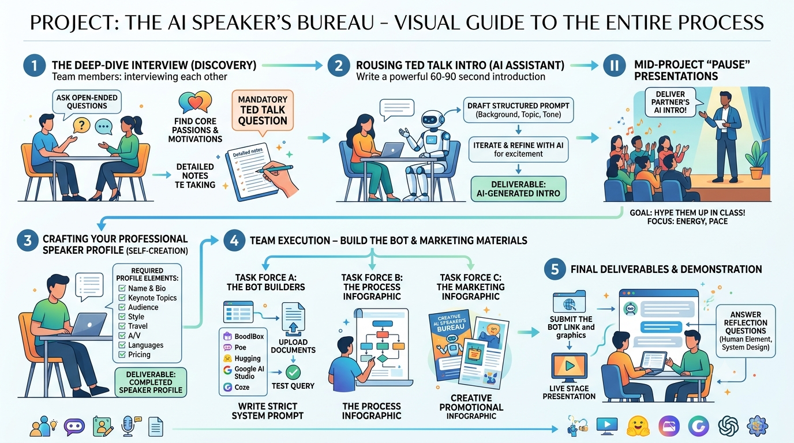

Description
The Voices of Tomorrow Speaker's Bureau Bot is a custom chatbot built around a structured knowledge base of eight verified speaker profiles. The roster covers a wide range of topics, including artificial intelligence and machine learning, personal resilience and mental health, cross-cultural leadership, food science and consumer awareness, and endurance-driven decision making.
A user simply tells the bot their event's topic, audience, budget, and format (in-person or virtual), and it recommends the best-matching speaker — complete with bio, keynote topics, pricing, and travel details, pulled directly from the verified speaker profiles. It also handles open-ended queries like "Who can speak about AI to a college audience?" or "Show me speakers under $2,000." Whether the event is a college orientation, a corporate keynote, a TEDx event, or a community workshop, the bot makes finding the right voice for the stage fast and easy.
The project also included a promotional infographic introducing the bureau, the eight-speaker roster, and VIA — the Virtual Intelligent Assistant that powers the booking experience. I appear on the roster myself as speaker #8: Physics Researcher & Adventurer, speaking on resilience and endurance, science and discovery, and leadership and mindset.
The Deliverables


Objective
To design and build a working, knowledge-grounded conversational AI assistant — and in the process, learn how to structure a real dataset (speaker profiles), engineer a system prompt that keeps the bot accurate and on-task, and shape a conversation flow that gathers exactly the information needed to make a good recommendation.
Process
This was a team project, built in five phases (documented in the process infographic above):
- Discovery interviews: team members interviewed each other with open-ended questions to uncover core passions, motivations, and each person's "mandatory TED talk question," capturing detailed notes.
- AI-assisted TED talk intros: each of us drafted a structured prompt (background, topic, tone) and iterated with an AI assistant to write a rousing 60–90 second introduction, delivered live for our partner in mid-project presentations.
- Speaker profile creation: every team member crafted their own professional speaker profile — name and bio, keynote topics, audience, style, travel, A/V needs, languages, and pricing — forming the bot's verified knowledge base.
- Team execution in task forces: the bot builders uploaded the profile documents, wrote a strict system prompt, and ran test queries, while two other task forces produced the process infographic and the creative marketing infographic.
- Final deliverables and demonstration: we submitted the bot link and graphics, gave a live stage presentation, and answered reflection questions on the human element and system design.
Tools & Technologies Used
- BoodleBox (bot-building and hosting platform)
- Prompt engineering (strict system prompt / START prompt design)
- Structured knowledge-base design (uploaded speaker profile documents)
- AI assistants for drafting and iterating on the TED talk introductions
- Graphic design tools for the marketing and process infographics
Value Proposition
Unique Value
This artifact shows that I can take an AI capability and turn it into a finished, usable product: scoping a real-world problem, structuring the data an AI system needs, and engineering its behavior so answers stay grounded in verified information rather than invention. It's the same engineering discipline I bring from robotics and physics research, applied to conversational AI.
Relevance
Organizations everywhere are trying to put AI assistants in front of customers without letting them hallucinate. This project demonstrates, at a small scale, the exact skills that requires — knowledge grounding, conversation design, and iterative testing — and serves as a worked example others can follow to build their own domain-specific assistant.
Attribution
Voices of Tomorrow was a team project for AIML-500 at Indiana Wesleyan University. The bot, marketing infographic, and process infographic were produced by the team's three task forces, with every member contributing their own verified speaker profile. The bot is built and hosted on BoodleBox.